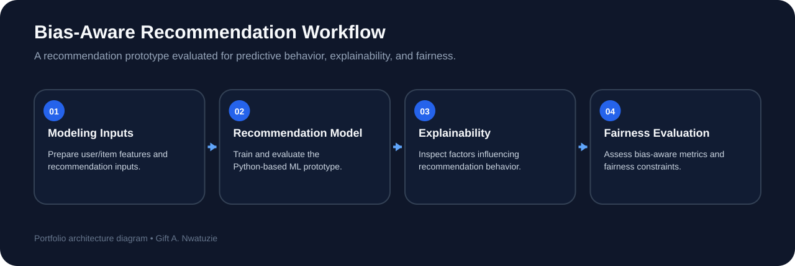

Recommendation Prototype
Designed and implemented a recommendation-system prototype using Python and machine learning methods.
RECOMMENDATION SYSTEMS • EXPLAINABLE AI • RESPONSIBLE PERSONALIZATION
A recommendation-system prototype designed to combine predictive relevance with explainability and fairness-aware evaluation, supporting more transparent and responsible personalization.
THE PROBLEM
Recommendation systems can improve user experiences by ranking or suggesting relevant content, but they can also reinforce hidden biases or make decisions that are difficult to interpret. This project explored how recommendation workflows could incorporate fairness-aware evaluation and explainability alongside predictive modeling.
ENGINEERING WORKFLOW
RECOMMENDATION WORKFLOW DIAGRAM

TECHNICAL CONTRIBUTIONS
Designed and implemented a recommendation-system prototype using Python and machine learning methods.
Incorporated explanation methods to make model behavior easier to inspect and communicate.
Evaluated recommendation behavior using fairness metrics and bias-aware constraints rather than relying on predictive quality alone.
Mentored junior fellows on software architecture, responsible AI, and machine learning engineering practices.
WHY THIS MATTERS
In production personalization systems, model quality can include relevance, reliability, transparency, and responsible behavior. This project strengthened my interest in engineering recommendation systems that are evaluated not only for predictive performance, but also for how their decisions affect different users and how clearly those decisions can be understood.
ENGINEERING TAKEAWAY
The project demonstrated how fairness and explainability can be integrated directly into the machine learning workflow. It also provided practical experience translating responsible-AI concepts into a working software prototype and communicating those design choices to other engineers.
EXPLORE MORE